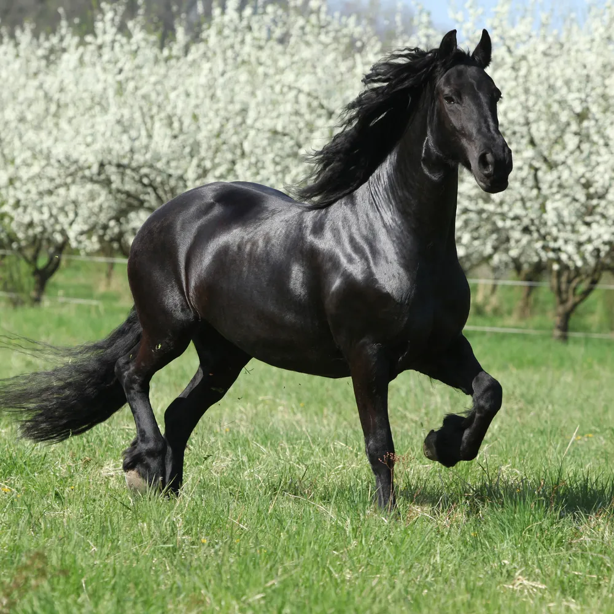

Frieser hest
Frieser (også Friser og Friserhest) er en hesterace der tilhører de barokke heste ligesom Andalusier og Lipizzaner. Den egner sig til både kørsel, ridning, dressur og show.
Frieser (også Friser og Friserhest) er en hesterace der tilhører de barokke heste ligesom Andalusier og Lipizzaner. Den egner sig til både kørsel, ridning, dressur og show.